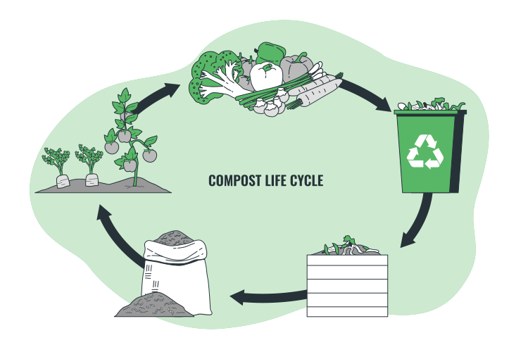

Projeto Aidly
A agricultura sustentável utiliza práticas amigáveis ao meio ambiente, preservando os recursos naturais e minimizando impactos negativos. A inteligência artificial generativa traz inovação para a produção agrícola, otimizando processos e aumentando a eficiência. O cultivo eficiente, por sua vez, utiliza técnicas que maximizam a produtividade em áreas limitadas. Juntas, essas abordagens contribuem para o combate à fome, garantindo uma produção de alimentos mais abundante, ecologicamente responsável e resiliente às mudanças climáticas.